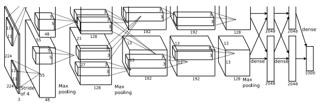
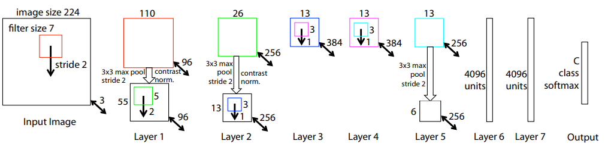
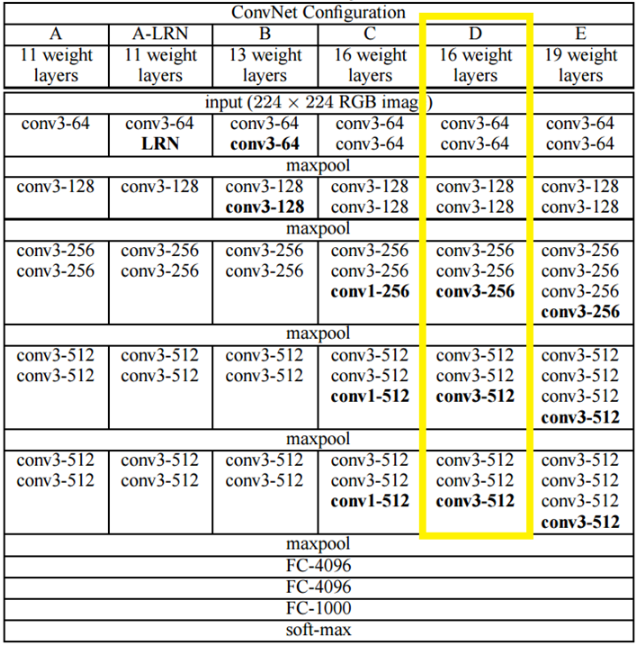
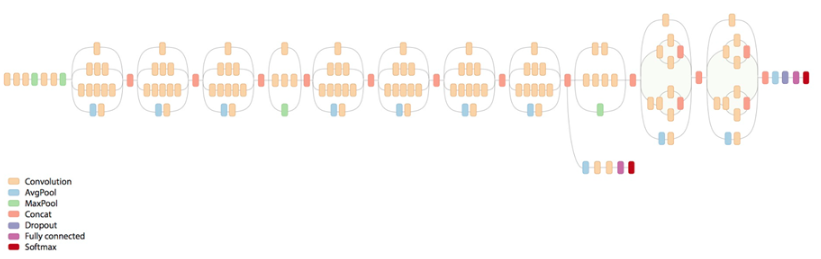
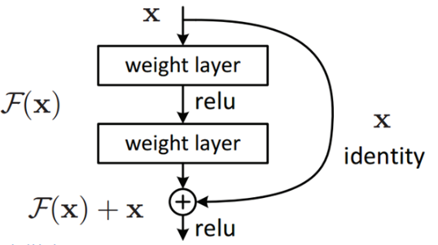

Leuk Medium artikel. wat is semantische segmentatie?
Dit netwerk heeft de hype rond convolutionele netwerken gestart. In de competitie op de ImageNet dataset won het overtuigend met een top-5 fout van 15.3 %, 10% minder dan de tweede plaats. In deze dataset is het doel om een afbeelding te classificeren in een van 1000 klassen. Het netwerk bevat 5 convolutionele lagen en 3 fully connected lagen. De originele paper is hier.
Dit netwerk is gemaakt door Matt Zeiler en Rob Fergus verbonden aan NYU. Het netwerk is gebaseerd op AlexNet. In hun paper introduceren ze het concept van een deconvNet . Dit geeft voor elke laag van het netwerk de features weer waarop het getraind is. Deze paper geeft een manier om een CNN te analyseren en zo ook te verbeteren. Link naar hun artikel op ArXiv is hier .
Dit netwerk gebruikt een kleine 3x3 filter, maar dan met 2 convolutionele lagen. Dit in tegenstelling tot AlexNet met een 11x11 filter of ZFnet met een 7x7 filter. Door de kleinere filters kan het netwerk meer lagen bevatten en dus veel dieper worden. Verschillende variaties zijn voorgesteld, met 11 tot 19 convolutionele lagen. Deze worden gevolgd door 3 fully connected lagen. Het netwerk betere resultaten dan AlexNet of ZFnet. De geïnteresseerde lezer vindt de originele paper hier.
Dit netwerk introduceerde een inception module . In plaats van de lagen in serie te zetten, komen er parallele lagen. Zo kan het netwerk nog dieper worden, het netwerk bevat 22 lagen. Er is bovendien maar 1 fully connected laag in plaats van 3. Dit zorgt ervoor dat het netwerk 12 keer minder parameters heeft dan AlexNet en veel sneller getraind kan worden. De originele paper is te vinden op de ArXiv.
Dit netwerk is opmerkelijk diep en heeft 152 lagen. Op de ImageNet data behaalde het een foutenpercentage van 3.6 %, dit is minder dan het foutenpercentage van 5 % dat mensen behalen. Als men de lagen naïef opstapelt, dan leidt dit tot overfitting en een toename van het te trainen parameters. Om dit tegen te gaan kwam men met het concept van een residual block . In zo'n blok is de output de som van de output van de convolutionele lagen en de input. De verbinding tussen input en output zorgt ervoor dat de gradiënt zich sneller kan terugpropageren door het netwerk. De originele paper vindt u hier.
| Netwerk | Top-5 fout |
|---|---|
| AlexNet | 15.3 % |
| ZFnet | 14.7 % |
| VGG net | 7.3 % |
| GoogLeNet | 6.7 % |
| ResNet | 3.6 % |